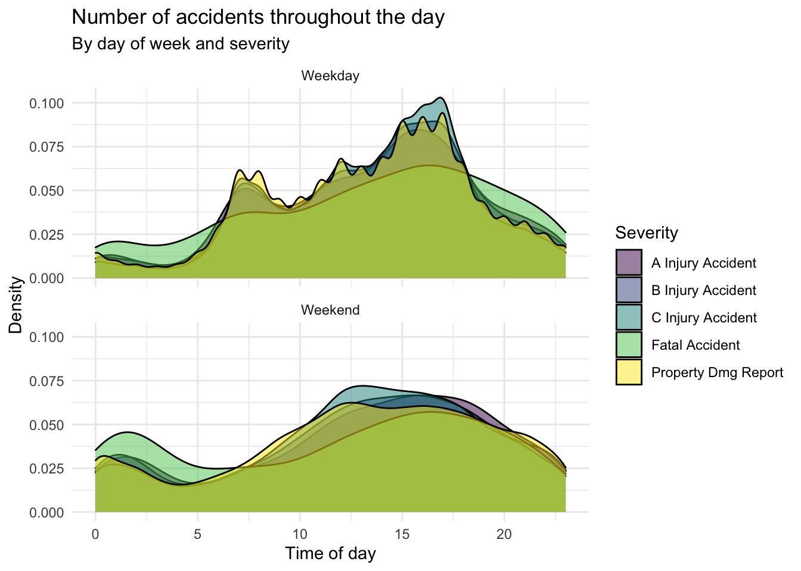

library(tidyverse)
library(lubridate)
library(scales)SPS 502 - Homework II
Due by 11:59 p.m., Friday October 14
Introduction
Welcome to homework 2! We’re going to use the same local data from the last homework: Idaho traffic accidents.
Logistics and tips for success
This lab will require you to write some of your own code (similar to lab 2). Read these instructions carefully as you work through the homework assignment.
How to answer questions
Some questions will direct you to write code, while others will direct you to write a response. You’ll see TYPE YOUR ANSWER HERE in your RMarkdown file in places where I expect you to write a response. And you’ll see code blocks with #Delete and enter your code where I expect you to write your own code.
Copying/pasting and writing code
Copying and editing code from other answers or examples is a great way to both save time and learn. If you copy code over and something isn’t working, look carefully at the edits you made to see whether you missed something in the copying/pasting process. Also, be sure you’ve edited ALL the variable/object names appropriately so you’re accomplishing what the question is asking you to do. You should also make sure that you’re typing the variable and object names EXACTLY as they appear in the dataset or environment pane (spelling and case must match exactly).
If you’re stuck
If you get stuck, don’t panic! Before you ask for help, give yourself a few minutes to figure it out. Search ModernDive, look at your previous labs, and google your problem with “tidyverse”. Also, step away from your computer for a few minutes if you need a break. Finally (and this doesn’t have to be the last step), ask for help on Slack!
Setup
First, enter your name in the YAML header and rename your RMarkdown file.
Next, let’s load the packages we’ll need.
Load Packages
Import Data
Next, let’s load the data:
# Load raw data
idaho_crashes_raw <- read_csv("data/Crash_Data_2005__Present.csv")Rows: 299135 Columns: 9
── Column specification ────────────────────────────────────────────────────────
Delimiter: ","
chr (3): Severity, County, IntersectionRelated
dbl (5): OBJECTID, Mile_Point, Accident_Year, Number_Of_Fatalities, Number_...
dttm (1): Accident_Date_Time
ℹ Use `spec()` to retrieve the full column specification for this data.
ℹ Specify the column types or set `show_col_types = FALSE` to quiet this message.Just like last time, we will use the lubridate package to create new variables. The code should look a little less confusing than it did when you first saw it in homework 1.
idaho_crashes_clean <- idaho_crashes_raw %>%
mutate(Hour= hour(Accident_Date_Time),
Month = month(Accident_Date_Time, label = TRUE, abbr = TRUE),
Day = wday(Accident_Date_Time, label = TRUE, abbr = TRUE)) %>%
rename(Year = Accident_Year)Analysis
Run
View(idaho_crashes_clean)in your Console to view the data in the data viewer. What does each row in the dataset represent?Recreate the following plot.
idaho_crashes_clean <- idaho_crashes_clean %>%
mutate(severity = fct_recode(Severity,
"A Injury Accident" = "Injury Accident",
"B Injury Accident" = "Injury Accident",
"C Injury Accident" = "Injury Accident")) Warning: Unknown levels in `f`: Injury Accident, Injury Accident, Injury
Accident